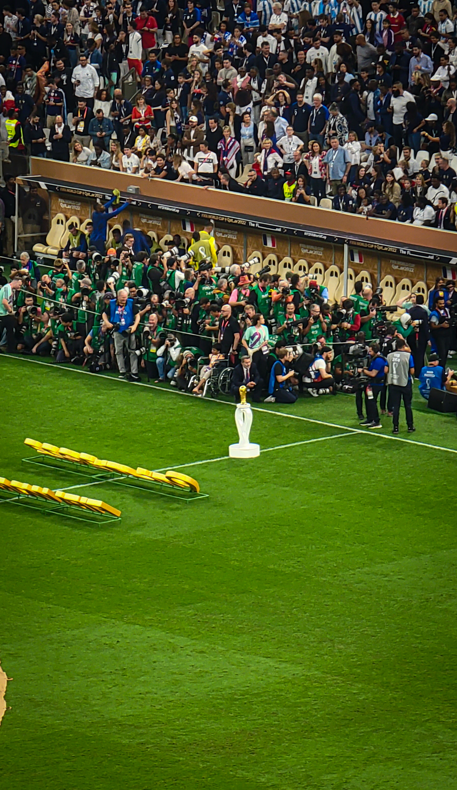
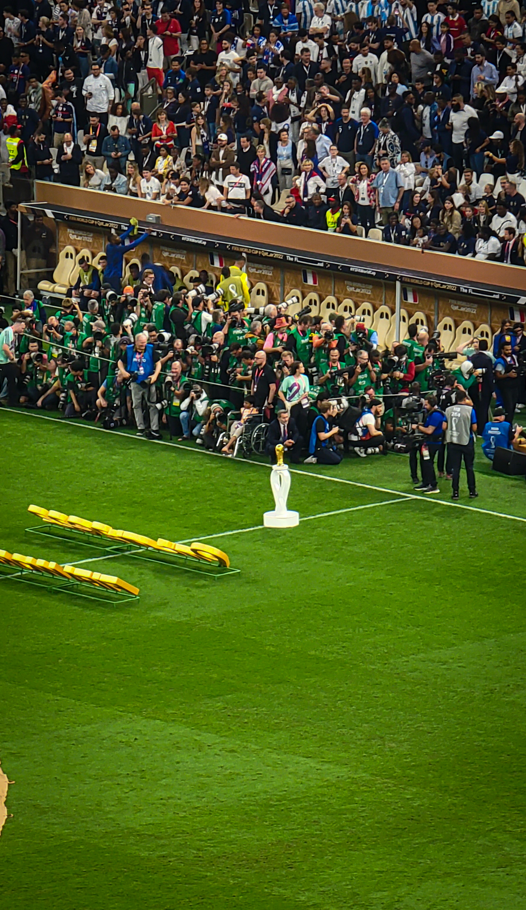
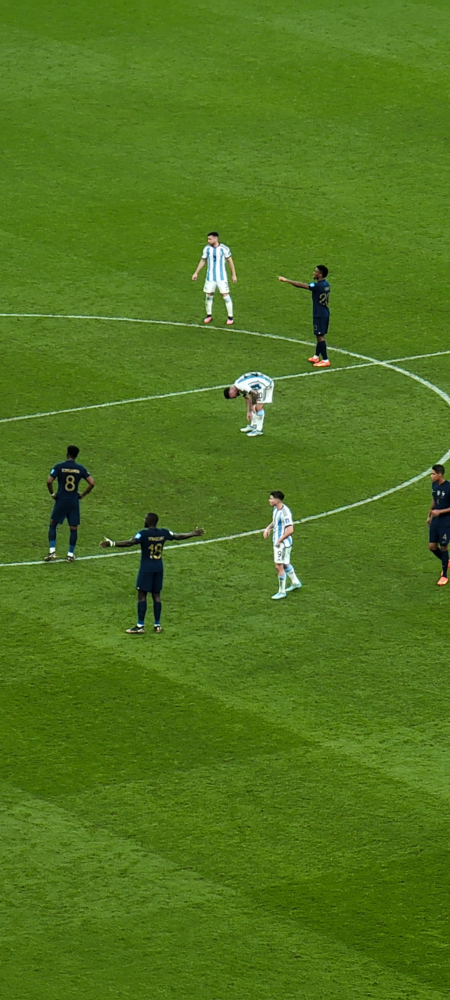
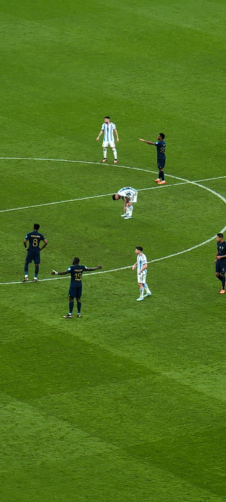
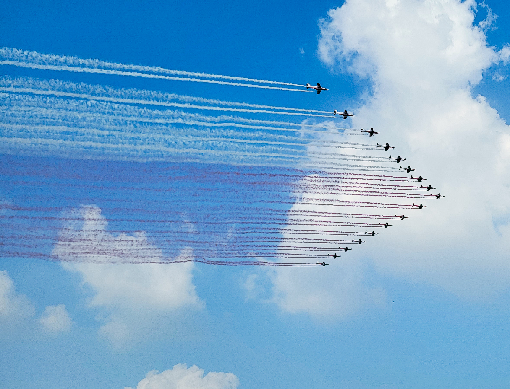
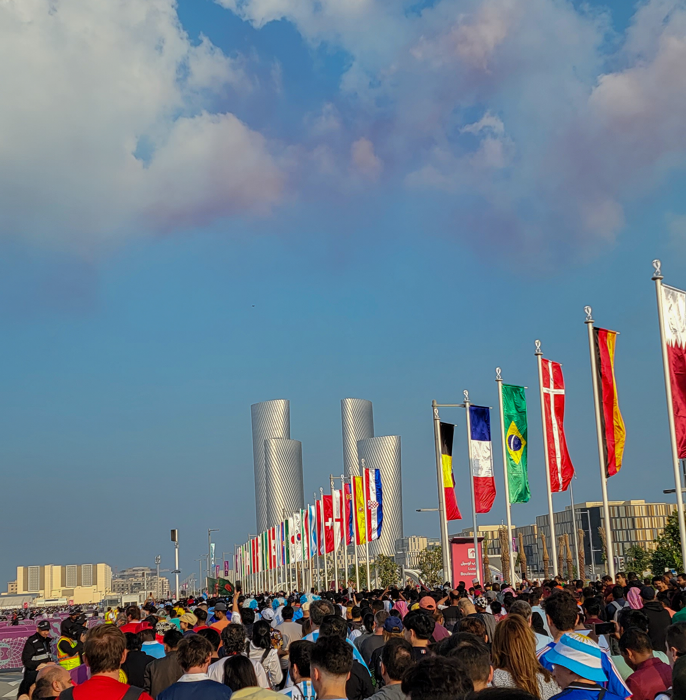
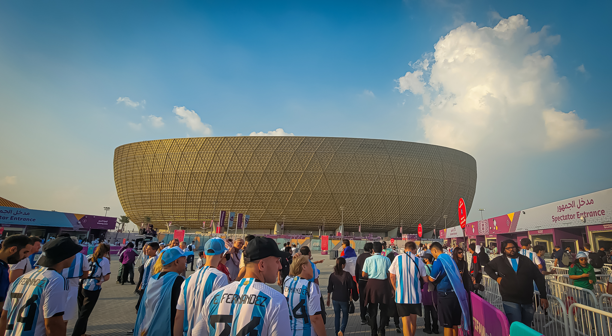
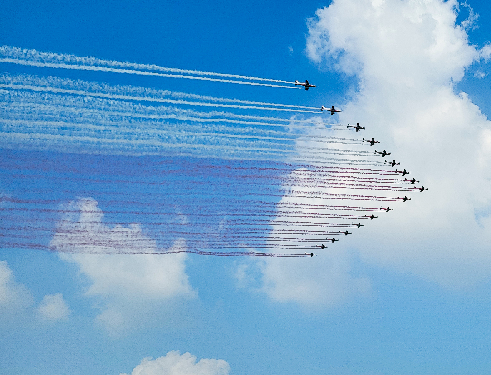
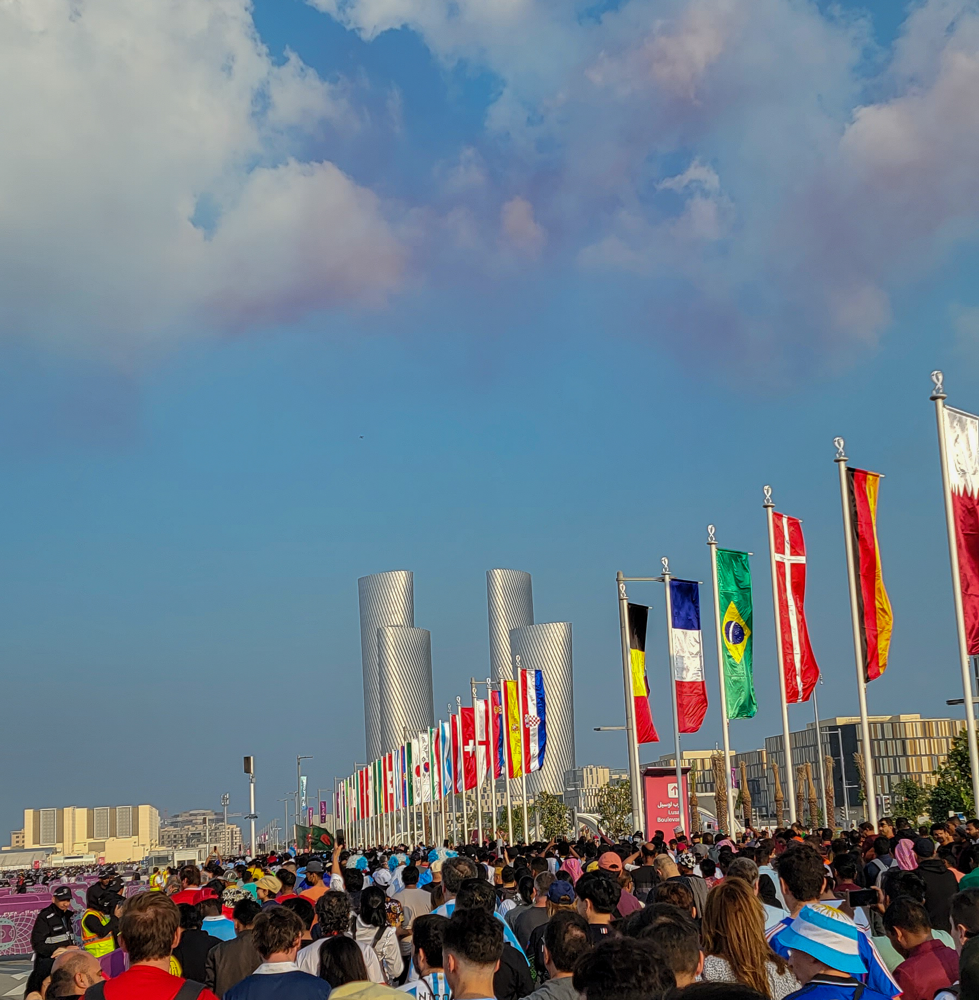
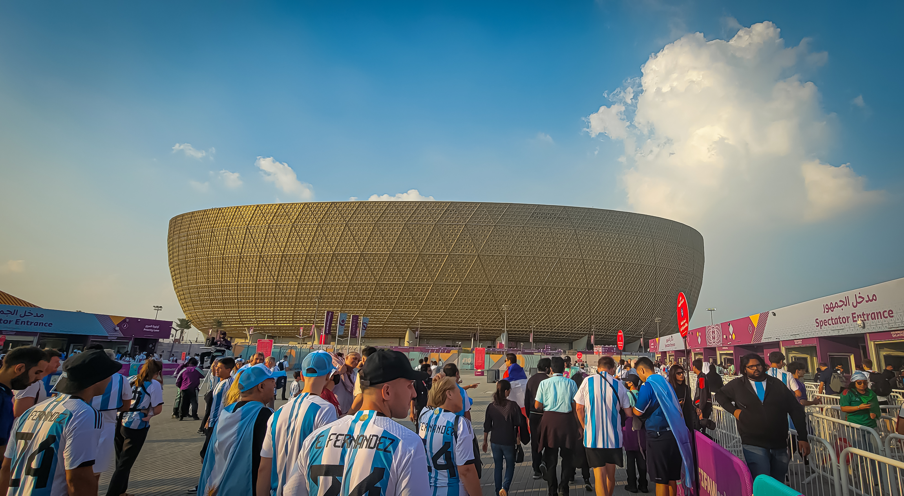

A Pinnacle Experience: Witnessing Messi's Triumph in the World Cup Final
Attending my first-ever World Cup final was a dream come true, an experience that transcended the realm of mere fandom and transformed into a defining moment in my life. The anticipation, the electric atmosphere, and the sheer magnitude of the occasion made it an unforgettable journey into the heart of the beautiful game. Little did I know that this particular final would be etched in history as one of the greatest games ever played, and that I would witness Lionel Messi, the maestro himself, cementing his legacy as the Greatest of All Time (GOAT). The excitement began long before the final whistle blew, as fans from around the world gathered to celebrate the culmination of weeks of intense competition. The roar of the crowd, the colorful displays, and the palpable energy in the stadium created an ambiance that was nothing short of magical. As the teams entered the pitch, I couldn't help but feel a sense of awe and gratitude for being part of this global celebration of football. The final between Argentina and France unfolded with a narrative that exceeded all expectations. The stakes were high, the competition fierce, and the quality of play reached new heights. In the midst of it all, Lionel Messi, a football icon whose career had been defined by individual brilliance, leadership, and an enduring quest for international success, seized the moment. His performance was nothing short of breathtaking – a showcase of skill, precision, and a relentless will to win. As Messi orchestrated the game with unparalleled finesse, it became evident that this was more than just a match; it was a coronation. Witnessing him lift the World Cup trophy was a culmination of years of dedication, heartache, and unyielding commitment. The joy and emotion on Messi's face mirrored the sentiments of fans worldwide who had followed his journey and longed for this crowning achievement. The impact of this experience extended beyond the confines of the stadium. It was a testament to the power of sports to inspire, unite, and create shared moments of joy. The memories of that day will forever be etched in my heart, a reminder of the beauty and significance of football as a universal language that connects people across cultures and continents. In conclusion, attending my first World Cup final and witnessing Lionel Messi's historic triumph was more than a spectator's experience; it was a profound journey that left an indelible mark on my passion for football. The memories of that special day will serve as a constant reminder of the magic that unfolds when the world comes together to celebrate the beautiful game and the extraordinary individuals who define its greatness.


 

 



 




